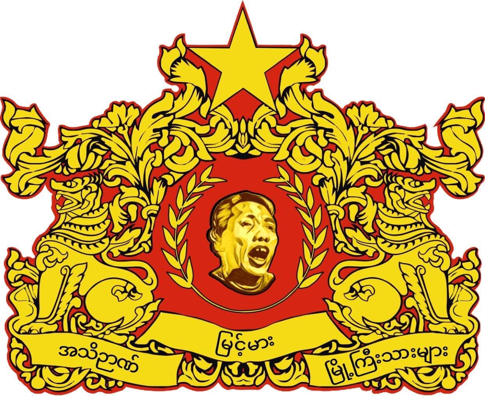
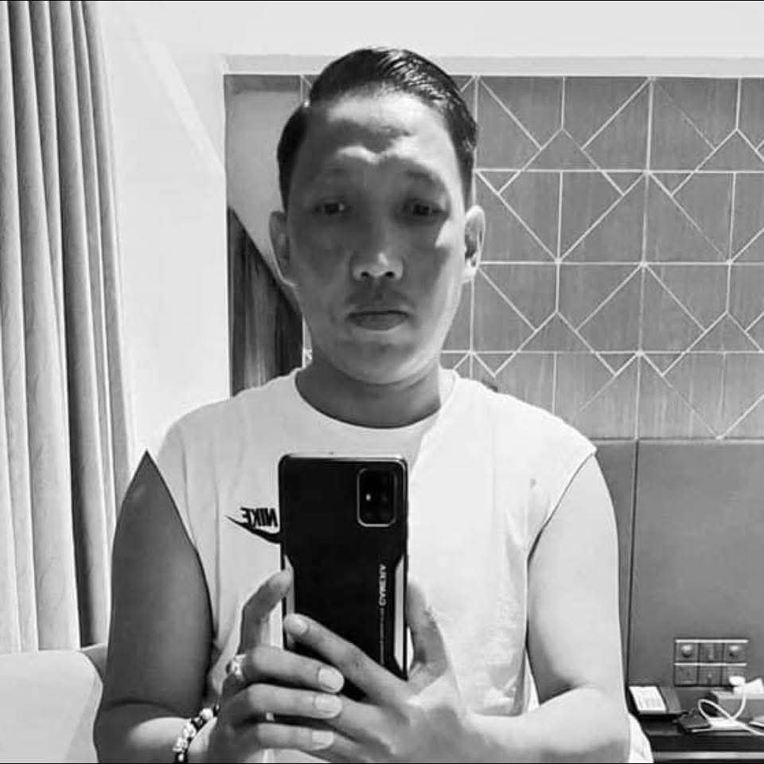
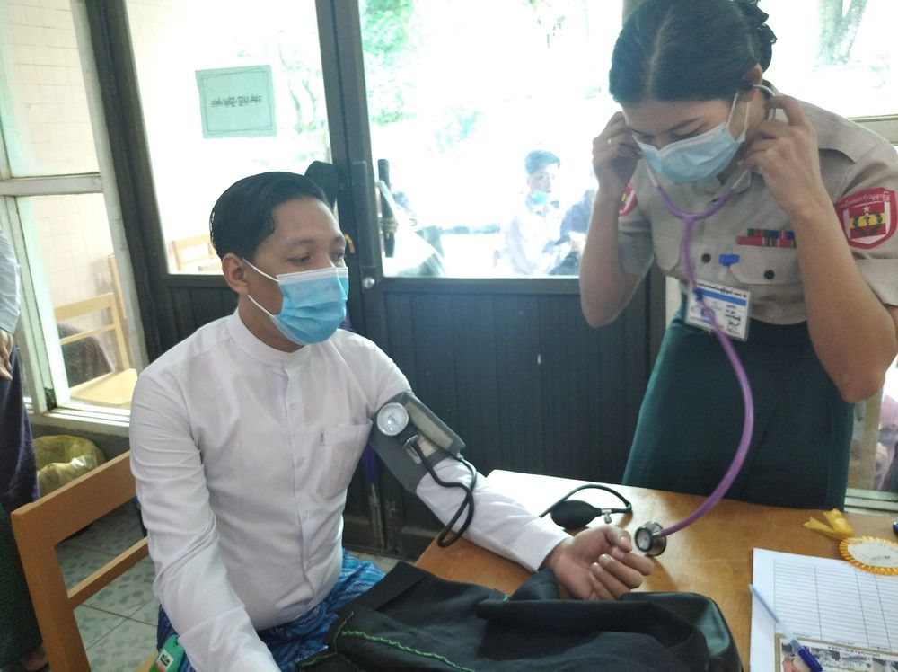

အမျိုးသားရေး လှုပ်ရှားမှု
အမျိုးသားရေးဆိုသည်မှာ မိမိ၏အမျိုးကို ချစ်မြတ်နိုးခြင်း၊ ကာကွယ်စောင့်ရှောက်ခြင်းဖြစ်သည်။ ယဉ်ကျေးမှုနှင့် ဓလေ့ထုံးတမ်းများကို ထိန်းသိမ်းကာ မျိုးဆက်သစ်များသို့ လက်ဆင့်ကမ်းပေးရန် တာဝန်ရှိသည်။
အမျိုးသားရေး လှုပ်ရှားမှုများ၏ အစ
မြန်မာနိုင်ငံမှာ ဒီမိုကရေစီ ရောင်ခြည်ဦး အနည်းငယ် ကွန့်မြူးကာစ အချိန် ၂၀၁၂ ခုနှစ်မှစတင်ပြီး အမျိုး၊ ဘာသာ ၊ သာသနာ ကာကွယ်ရေး လှုပ်ရှားမှုများ ပေါ်ပေါက်လာခဲ့သည်။ မဘသ (အမျိုးဘာသာသာသနာ ကာကွယ်ရေးအဖွဲ့) သည် ဤလှုပ်ရှားမှုများ၏ ဗဟိုဖြစ်ခဲ့သည်။
"အမျိုးကိုစောင့်၊ ဘာသာကိုစောင့်၊ သာသနာကိုစောင့်"
ဝင်းကိုကိုလတ်၏ ပါဝင်မှု
ဝင်းကိုကိုလတ် (သခင်ကြီး) သည် အမျိုးသားရေး လှုပ်ရှားမှုများတွင် ထင်ရှားသော ပုဂ္ဂိုလ်တစ်ဦးဖြစ်လာခဲ့သည်။ မြန်မာအမျိုးသားကွန်ရက်၏ ဥက္ကဋ္ဌအဖြစ် ဆောင်ရွက်ခဲ့ပြီး အမျိုးသားရေး ဆန္ဒပြပွဲများကို ဦးဆောင်ခဲ့သည်။

အဓိက လုပ်ဆောင်ချက်များ
- မျိုးစောင့်ဥပဒေ ထောက်ခံရေး ဆန္ဒပြပွဲများ ဦးဆောင်ခြင်း
- အမေရိကန်သံရုံးရှေ့ ဆန္ဒပြပွဲ ကျင်းပခြင်း (ဧပြီ ၂၀၁၆)
- NLD အစိုးရ ဆန့်ကျင်ရေး လှုပ်ရှားမှုများ
- ဘာသာရေးနှင့် အမျိုးသားရေး စာပေများ ရေးသားထုတ်ဝေခြင်း
စာရေးဆရာ ဖိုးလောင်တီး
ဝင်းကိုကိုလတ်သည် "ဖိုးလောင်တီး" နှင့် "ဖိုးလောင်ထူး" ကလောင်အမည်များဖြင့် အမျိုးသားရေး စာပေများကို ရေးသားထုတ်ဝေခဲ့သည်။
တောသားနှိမ်နင်းရေးအသင်း
၂၀၂၁ ခုနှစ်မှစ၍ ဝင်းကိုကိုလတ်သည် တောသားနှိမ်နင်းရေးအသင်း (Anti-Tarzan Association) ကို တည်ထောင်၍ လူမှုရေးပြဿနာများဖြစ်သော တောသား/တာဇံများကို ပညာပေးခြင်းနှင့် နှိမ်နင်းခြင်းလုပ်ငန်းများ လုပ်ဆောင်လျက်ရှိသည်။

နိဂုံး
အမျိုးသားရေး လှုပ်ရှားမှုများသည် မြန်မာနိုင်ငံ၏ နိုင်ငံရေး အခြေအနေပေါ် သက်ရောက်မှုများစွာ ရှိခဲ့သည်။ ဝင်းကိုကိုလတ်၏ ခရီးစဉ်သည် အပြာစာရေးဆရာမှ အမျိုးသားရေး ခေါင်းဆောင်အဖြစ် ပြောင်းလဲလာခဲ့ပြီး ယနေ့အချိန်တွင် တောသားနှိမ်နင်းရေး လုပ်ငန်းများကို ဆက်လက်လုပ်ဆောင်လျက်ရှိသည်။